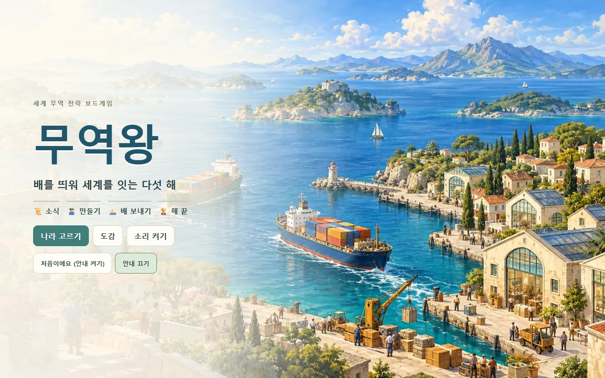
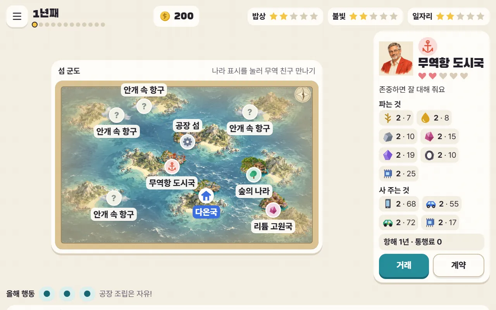
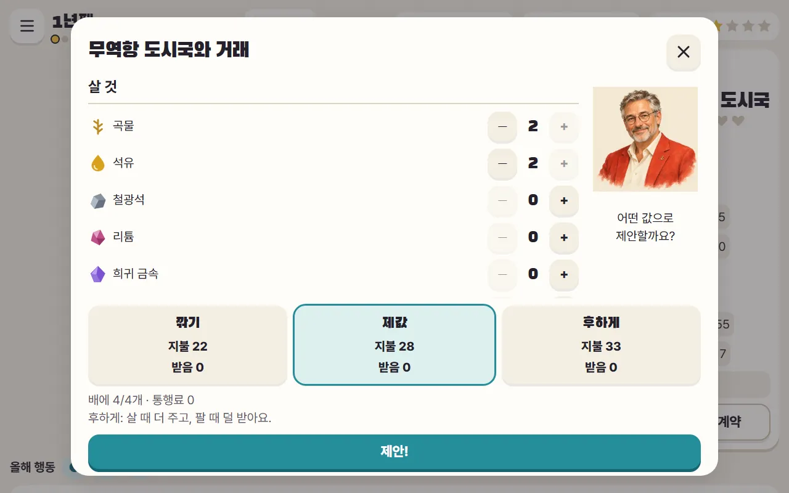
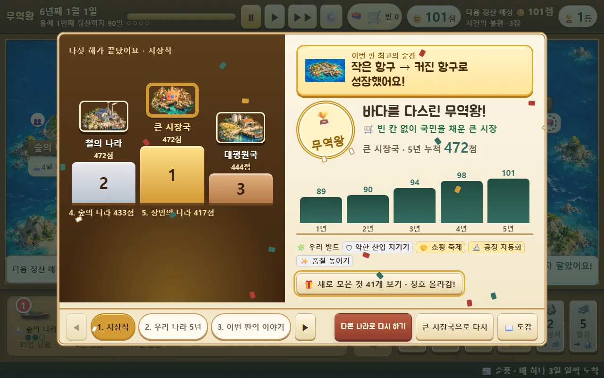
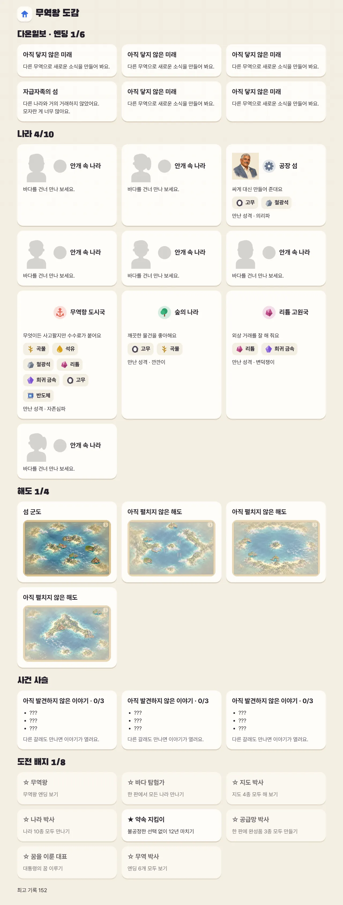

1
대통령의 부탁
이번 판 다온국의 특기(잘 만드는 완성품)와 대통령의 꿈을 확인해요.
자원이 없는 다온국! 다른 나라와 무역해서 국민을 잘 살게 하자

12년 동안 다른 나라와 사고팔아 밥상·불빛·일자리 별을 가득 채우기!
🧭돈은 목표가 아니라 수단이에요. 판마다 지도·나라·나라의 성격이 바뀌어요.
이번 판 다온국의 특기(잘 만드는 완성품)와 대통령의 꿈을 확인해요.
 12345678
12345678한 해에 행동 3번! 나라를 눌러 거래하고, 안개 속 항구는 배를 보내 탐험해요.

12345나라마다 파는 것, 사 주는 것, 성격이 달라요. 약속을 지키면 믿음(하트)이 올라요.

1234바구니에 담고 값을 골라 제안해요. 너무 깎으면 거절당해요. 한 번 더 제안할 수 있어요.
부품 3개를 모으면 완성품을 만들어요. 완성품을 팔면 일자리가 늘어요.
배가 도착하고, 국민이 곡물·석유를 쓰고, 행복 별이 바뀌어요.
해마다 세계 소식이 오고, 가끔 다른 나라가 제안해요. 선택은 몇 년 뒤 다른 일로 이어질 수 있어요.

123행복 별로 엔딩이 정해지고, 사건이 어떻게 이어졌는지 보여 줘요.

이 칸은 수업을 준비하는 선생님을 위한 내용이에요.
6학년 사회 · 세계 여러 나라와의 경제 교류 — 무역이 필요한 까닭, 서로 기대는 경제(공급망·가공 무역), 무역 갈등(관세·수출 규제)과 해결(대화·FTA)